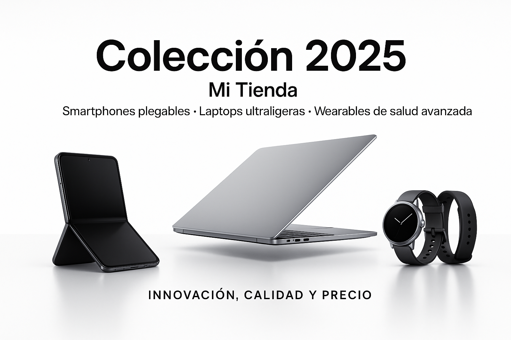

Lanzamiento de la nueva colección Tech 2025
La tecnología avanza a pasos agigantados, y en Mi Tienda no nos quedamos atrás. Este 2025 lanzamos una nueva colección de productos tecnológicos de última generación que revolucionarán tu forma de interactuar con el mundo digital.
Nuestra colección incluye smartphones con pantallas plegables, laptops ultraligeras con rendimiento de escritorio, y wearables con funciones de salud avanzadas. Todos estos productos han sido seleccionados cuidadosamente para ofrecer a nuestros clientes innovación, calidad y precio accesible.
Innovaciones destacadas
- Smartphone XFold: El primer teléfono con pantalla totalmente plegable y resistencia al agua, equipado con cámara de 108MP y conectividad 5G.
- Laptop UltraOne: Una portátil de 13 pulgadas que pesa menos de 1kg pero con procesador de alto rendimiento y batería de 20 horas.
- Reloj Health+: Un smartwatch que mide niveles de estrés, oxígeno en sangre y realiza electrocardiogramas, ayudándote a cuidar tu salud en todo momento.
Visita nuestra sección de Productos para conocer más detalles y precios de esta nueva colección. ¡No te pierdas la oportunidad de ser uno de los primeros en experimentar la tecnología del futuro con Mi Tienda!